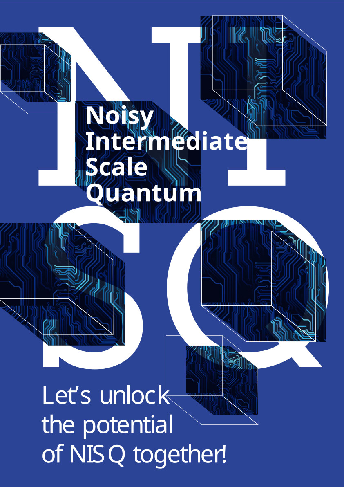
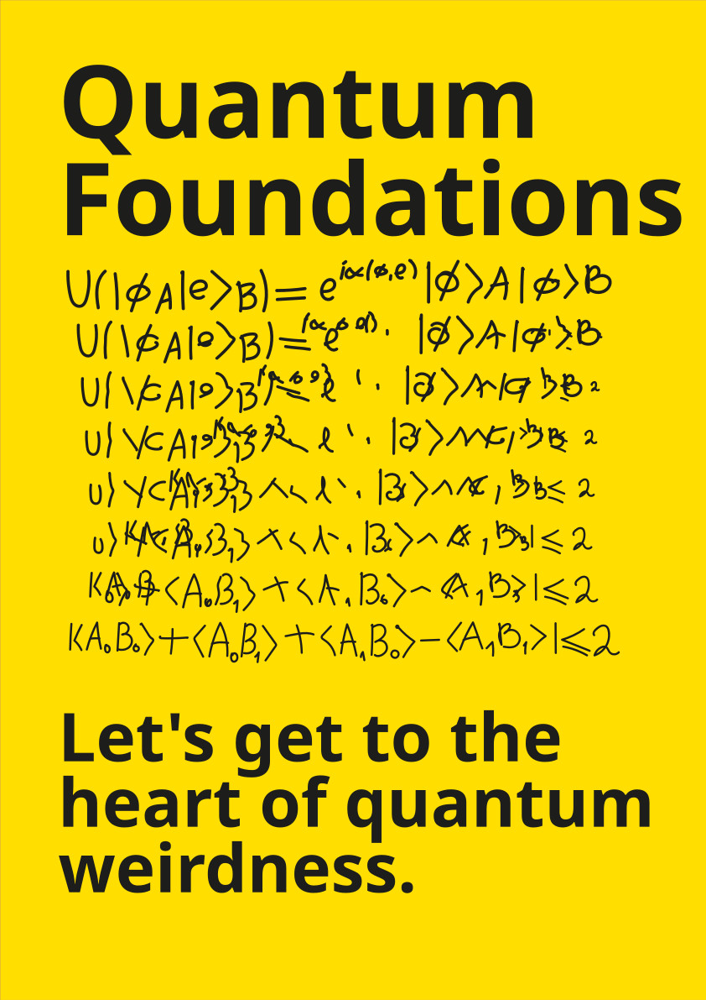
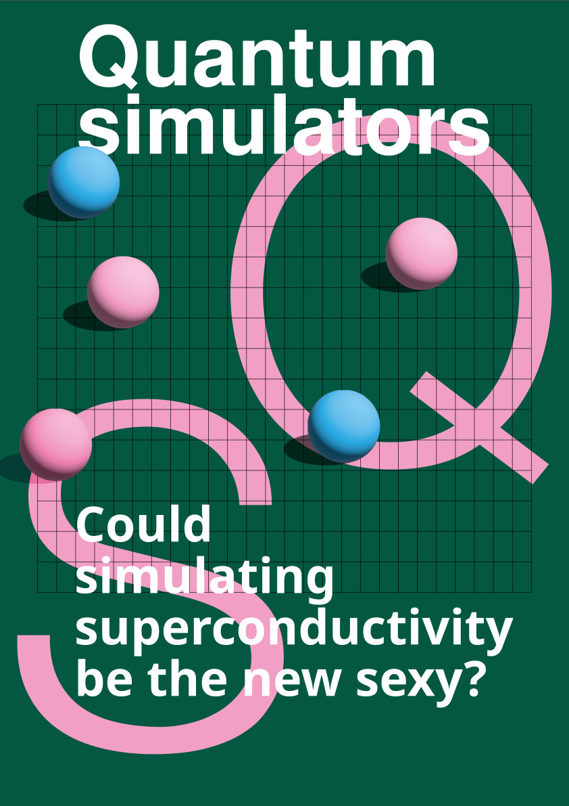
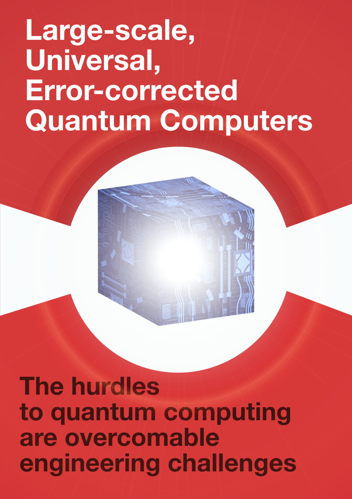
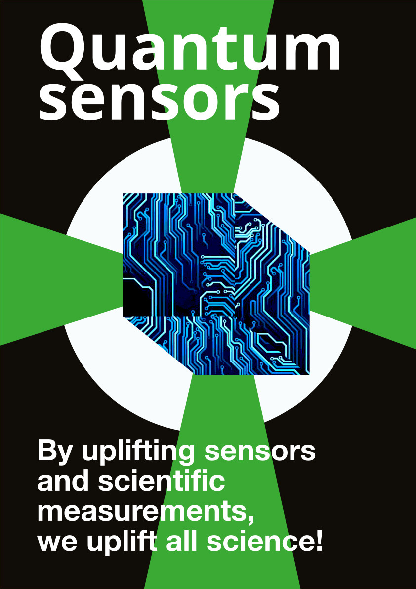

Shawn E. S. Skelton
Quantum Computing Outreach
With Anna Knörr, I created a list of articles and resources related to ethics in quantum computing, you can find it here .
Along with some alumni from my masters program, I wrote a play on quantum science and technologies in 2025. It was performed at the 25th anniversary of the Perimeter Institute for Theoretical Physics. You can read more about the project on our website or find the full script on arXiv. Thanks to some generous external funding and the creativity of the team at Innovailia, the project includes a series of posters showing off (some of) the key topics in quantum technologies!




